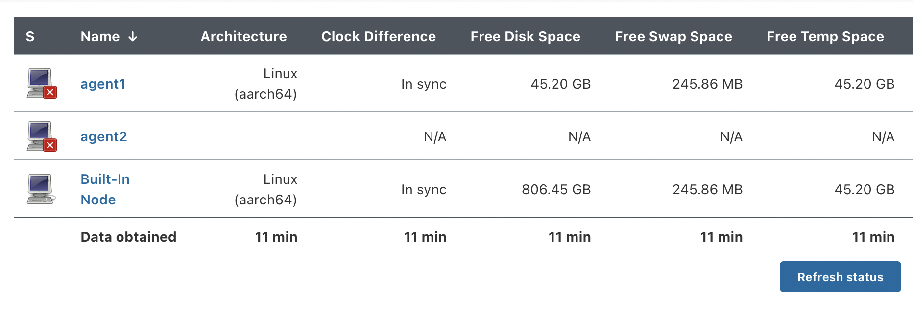
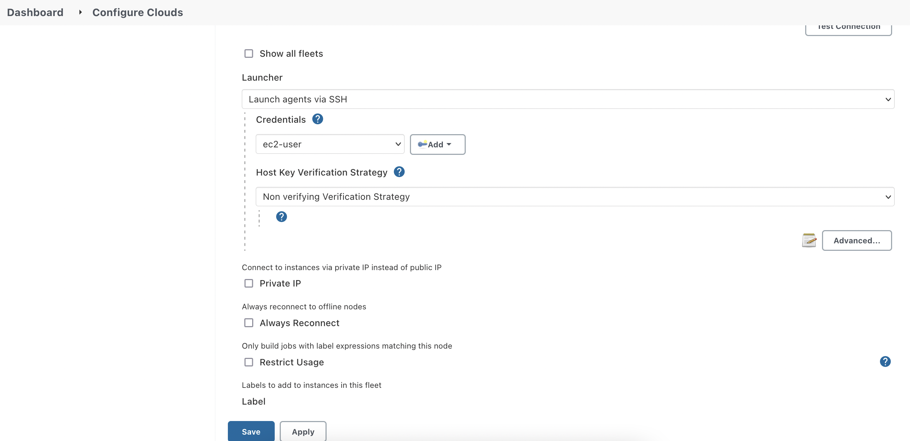

- Wed 22 September 2021
- roast and rock
- Jolene Yu
- #jenkins, #CI, #DevOps
As a DevOps newbie, I heard Jenkins even before I knew about CI/CD pipeline. In my mind, Jenkins must be a great product. It's so popular and widely used in enterprises. Most of the DevOps job vacancy in the market needs some experience of Jenkins. There must be a reason!
Until recently, I finally started learning about Jenkins after I played with GitHub Action, Bitbucket Pipelines. Ten days ago, I was excited and curious about this learning journey.
Now I officially state: I hate Jenkins!
Jenkins master is running on my local machine!
As I know, GitHub Actions and BitBucket Pipelines are all running in a serverless way, also known as SaaS. As a user, I don't need to manage the underlying infrastructure also means whenever a pull request triggered the pipeline, they could run it 24*7 for me.
For Jenkins, if you didn't deploy your Jenkins to a dedicated cloud compute or on-premise, your pipeline could face single point failure. To make it work, we need to manage the infrastructure and the operating system by ourselves.
I didn't expect a popular software like Jenkins would be such old school!
Configure a Jenkins agent is pretty hard!
I next figured I should try the Jenkins distributed builds. Maybe that's the power of Jenkins!
Jenkins provides three ways to connect to Agents(Slaves):
- Launching Agent with SSH from Master
- Launch Agent via Java Web Start
- Launch Agent via execution of command on the Master
I followed the tutorial and tried the first way - launch Agent with SSH from Master.
It's supposed to be fairly easy. But I was wrong!
I configured the Jenkins Master and Agent with Docker Compose, so it won't have network connection issues. Here I had a few problems: the first one was that I set up 22 port as the Master-Agent SSH connect port that is being used. The second one was the SSH key format I generated is not compatible with either Java or Jenkins. The third one was that the Agent is that accept connections. This was uncommon in my experience and it took me a while to figure out I should pass the public key environment variable to the Agent.
After I configured all this, I realized that the Agent needs to stay alive all the time even I configured the Agent "Availability" to "Bring this Agent online when in demand, and take offline when idle".
When you see this, you will automatically think "Ahh, great, it can automatically bring down my Agent when it's not in use and save me some money!"
But it didn't happen as I expected!!
What the Jenkins Master did is just killed the connection with the Agent! The Agent is still alive! (agent1)

Dynamic provisioning Jenkins Agents on AWS Cloud using Docker is not working!
I didn't give up yet. Is there a cloud way to scale out the Agents and bring them up whenever requires to save some cost? I did find a docker plugin and you can pull a docker container to a spot instance, and run your pipeline on the docker container. Once the job is finished, it will terminate itself automatically.
I thought I'd better gave it a try. No luck here. It didn't only work properly but also exposed a big security issue. I will explain it later.
Here is what I did to make it work. I configured a spot instance on AWS, installed docker and open a port for it to listen to commands from Master. Then I configured the Docker plugin on Master-side by adding a new cloud and a docker template. Okay, the test connection was successful.
I manually started the build on my Master console. Guess what? It gave me a bunch of docker containers and kept going on and on.
I checked the log that said, "This is probably a bug in Jenkins":(

I've never built successfully in this way.
After I manually stopped the build and terminated the instance, I tested if it could bring up another instance when a build is in the queue. It ended up waiting forever!!!
Now let's talk about the security issue of this architecture. Jenkins Master needs to connect to the spot instance with its public IP address since Jenkins Master is not running in the same VPC. Once I opened a port for docker service to listen to on the Agent host. If someone hacks into the host and controls docker with the public IP address and open port, it means the hacker takes over my host as docker service runs as the root user. The hacker can do whatever he wants.
So this is not a possible way to work with Jenkins properly.
Finally, something is working!
After working with the docker plugin, I have mixed feelings about plugins that Jenkins provides. On one hand, so much variety of the plugins makes me curious - is there any other plugins that could help the situation I am facing? On the other hand, I'm worried that it would end up like the docker plugin - buggy and can't go anywhere.
But there must be something out there that I don't know made Jenkins popular. So I decided to try one more time!
This time, I followed up an official tutorial from AWS.
First, I deployed the cloud infrastructure with a new VPC, an auto scaling group, a security group for the ASG, an IAM user with permission needed for Jenkins Agents. This infrastructure is provided with Terraform, feel free to use it. Repo is Here.
After deployed the resources on AWS, I configured a new cloud on Jenkins Master as below.
Hit Test Connection before move on to the next setting to test out if Jenkins Master can talk to the ASG.
The credential used by Launcher is the key pair attached to the launch template. Make sure to set the key's username to ec2-user as the SSH key on the agent is only readable by this default user. If you are using a different image to launch spot instances, double-check which user the system is using.
Since my Jenkins Master is running with a docker container on my local machine, I have to associate a public IP address to spot instances. If your Jenkins Master and Agents are in the same network, you don't need the public IP address setting in Terraform. For security concerns, tick Private IP as well.

I ticked the option Scale Executors by Weight as when I tested scale-out features, I couldn't make Master tell ASG that Jenkins needs more Agents to work without this option.
Also in Terraform, make sure not override with improper weighted_capacity in the section mixed_instances_policy in asg.tf. It could cause ASG not to trigger another spot instance as it believes that enough capacity is provided.
Jenkins EC2-Fleet cloud settings override ASG settings. So, the “Minimum Cluster Size” and “Maximum Cluster Size” values mentioned here override ASG’s settings dynamically.
If you set Minimum Cluster Size as 0, then when there are no pending jobs there won’t be any idle servers after Max Idle Minutes Before Scaledown minutes are met. In this scenario, when there is a new build request, it takes roughly two to five minutes for new spot instances to start processing after bootstrapping and installing necessary Jenkins agents.
Here I ticked No Delay Provision Strategy, it helps Jenkins Master scale up/down immediately.
Finally, this architecture is working! You can automatically trigger new agents to start to fulfil your pipeline requirements and no need to worry about paying extra for idle agents. You can also Delete Agent manually in the Jenkins console. Yep!
Furthermore, you can migrate your Jenkins Master to EC2 Spot Instance with a fixed EFS volume to keep Jenkins persistent data on it. I will update this to my Terraform code very soon. If you are interested, check here.
From my ten days experience with Jenkins, I would say I don't love it!
The trouble-shooting I spent on the underlying infrastructures along the way is not a pleasant journey! I could imagine making an enterprise-level Jenkins work properly needs a speciality team or a dedicated member to support. From the cost point of view, why don't choose other serverless products? I mean we have better options.
Besides, I found some of the plugins are up for adoption and didn't update for a long time. Even this EC2-Fleet-Plugin is still having a bunch of bugs in its GitHub repo. I recommend if you need to use Jenkins for some reason, use the third party managed versions, like CloudBees. They are much more well maintained and you can focus on your application development.
That's all for this wall of the post! I wish I did spend all this time practising my coding!!